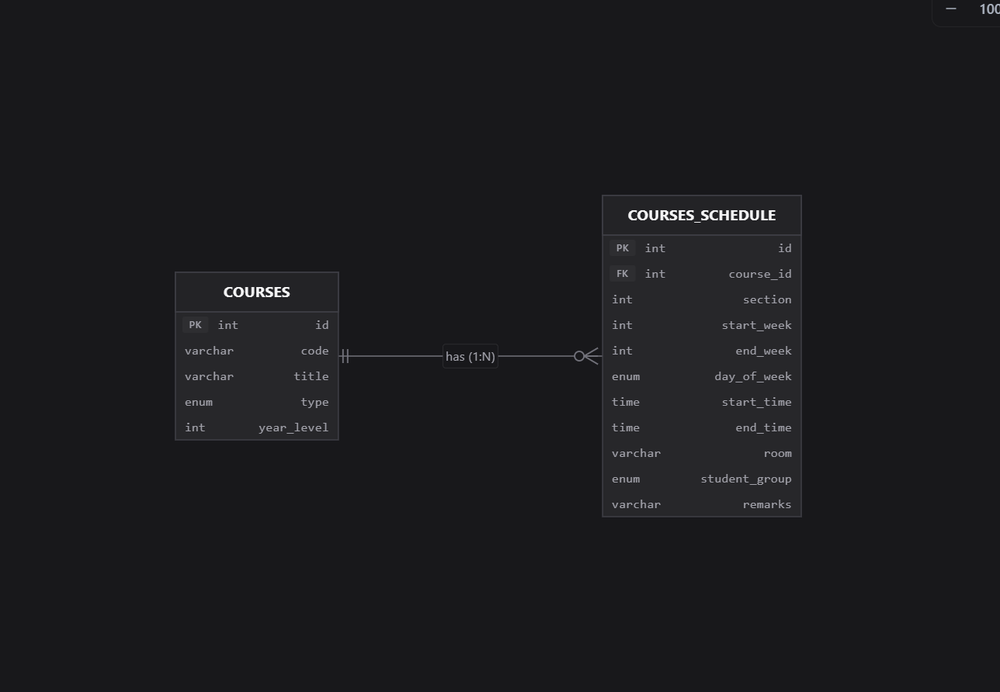

🗄️ Database & Prisma — 11 ตารางจาก Sprint 1 ถึง Sprint 3
MySQL 8.4 (utf8mb4_unicode_ci) ชื่อฐานข้อมูล zap_setdb ออกแบบให้เก็บข้อมูลตรงตาม Test Data เป๊ะทุก ID (TR-07) และ ไม่เก็บข้อมูลส่วนตัวนักศึกษา (TR-04)
11 Tables 1,181 Sessions utf8mb4 Prisma 6
แผนผังความสัมพันธ์ทั้งหมด (ER Diagram — ครบ 11 ตาราง)
erDiagram
courses ||--o{ courses_schedule : "1:N"
courses ||--o{ selections : "1:N"
courses_schedule ||--o{ schedule_lecturer : "M:N"
lecturers ||--o{ schedule_lecturer : "M:N"
courses_schedule ||--o{ sessions : "1:N (generated)"
courses {
int id PK
varchar code UK
varchar title UK
enum type "CORE|ELECTIVE"
int year_level "1..4"
}
courses_schedule {
int id PK
int course_id FK
int section "1..99"
int start_week "1..15"
int end_week "1..15"
enum day_of_week
time start_time
time end_time
varchar room
enum student_group "A|B|NULL"
}
selections {
varchar student_id PK "11 digits"
int course_id PK,FK
int section
datetime created_at
datetime updated_at
}
lecturers {
int id PK
varchar username UK
varchar first_name
varchar last_name
}
schedule_lecturer {
int schedule_id PK,FK
int lecturer_id PK,FK
}
sessions {
int id PK "1..1181"
int schedule_id FK
date date
time start_time
time end_time
}
academic_settings {
int id PK "always 1"
int current_academic_year
int current_semester
varchar program_code
date semester_start_date
date semester_end_date
}
student_group_ranges {
int id PK
int entry_year
enum student_group
int from_no
int to_no
}
academic_weeks {
int id PK
varchar label
enum kind "TEACHING|EXAM"
int teaching_week UK
date start_date UK
}
holidays {
int id PK
date date UK
varchar name
}
exam_periods {
int id PK
varchar name
date start_date
date end_date
}
🖼️ ดูภาพ ER Diagram ต้นฉบับของทีม (Sprint 1: db_design/er-diagram.png)

วิวัฒนาการของตารางในแต่ละ Sprint
| Sprint | ตาราง | จำนวนแถว (Seed) | Key & Constraint สำคัญ | หน้าที่ |
|---|---|---|---|---|
| Sprint 1 | courses | 51 | PK id, UNIQUE (code, title) | รายวิชาในเทอม |
courses_schedule | 92 → 97 | PK id, FK course_id, CHECK start_time < end_time | คาบเรียนรายสัปดาห์ (Sprint 3 เพิ่มแถว 93–97) | |
| Sprint 2 | academic_settings | 1 | CHECK id = 1 (Singleton table) | ปีการศึกษา 2569, รหัสหลักสูตร 504504, วันเปิด-ปิดเทอม |
student_group_ranges | 8 | UNIQUE (entry_year, student_group) | ช่วงเลขท้ายนักศึกษา → Group A/B | |
selections | 0 (ว่าง) | Composite PK (student_id, course_id) | วิชาเลือกที่นักศึกษากด Select (1 คนเลือก 1 วิชาได้ 1 sec) | |
| Sprint 3 | lecturers | 26 | PK id, UNIQUE username | รายชื่ออาจารย์ (PBI8) |
schedule_lecturer | 70+ | Composite PK (schedule_id, lecturer_id) | เชื่อม M:N ระหว่างคาบเรียนกับอาจารย์ | |
academic_weeks | 19 | UNIQUE start_date, teaching_week | สัปดาห์ W1–W15 + สัปดาห์สอบ Exam 1–3 | |
holidays | 7 | UNIQUE date | วันหยุดราชการ (ภาษาไทย — ใช้ UTF-8!) | |
exam_periods | 3 | CHECK start_date <= end_date | ช่วงสอบที่ใช้ตัด session ออก | |
sessions | 1,181 | PK id, UNIQUE (schedule_id, date) | คาบเรียนระบุวันที่จริง สร้างด้วย SQL CTE |
ไฟล์ SQL อยู่ในไหนบ้าง? ต่างกันอย่างไร?
database/init.sql (ไฟล์รันจริง)
รวมทุกอย่างไว้ในไฟล์เดียว: DROP DATABASE → สร้าง 11 ตาราง → Seed ครบทุกตาราง → รัน CTE สร้าง 1,181 sessions
ใครใช้: Docker MySQL container (ตอนเริ่มใหม่) และ GitHub Actions CI
db_design/* (เอกสาร & Migration)
• setdatabase.sql — โครง CREATE TABLE ล้วน (11 ตาราง)
• db_*.sql — ไฟล์ seed แยกตามตาราง (แก้/ตรวจง่าย)
• sprint2_migration.sql & sprint3_migration.sql — สคริปต์อัปเกรดแบบ Idempotent รันบน VM ที่มีข้อมูลเดิมอยู่แล้วได้โดยไม่ล้าง selections!
เทคนิค Idempotent Migration ใน MySQL 8.4
MySQL 8.4 ไม่มีคำสั่ง ALTER TABLE ... ADD COLUMN IF NOT EXISTS เหมือน MariaDB — ทีมจึงเขียนเช็คกับ information_schema.COLUMNS แล้วใช้ Dynamic SQL (PREPARE / EXECUTE) ใน db_design/sprint3_migration.sql เพื่อให้รันซ้ำกี่ครั้งก็ไม่พัง!
ความสัมพันธ์ระหว่าง MySQL กับ Prisma Schema
backend/prisma/schema.prisma ทำหน้าที่เป็น “ล่าม” ระหว่าง SQL (snake_case) กับ JavaScript (camelCase):
@@map("courses_schedule")→ ชื่อตารางใน MySQL คือcourses_scheduleแต่ใน JS เรียกprisma.courseSchedule@map("year_level")→ ชื่อคอลัมน์ใน MySQL คือyear_levelแต่ใน JS อ่านcourse.yearLevel@@id([studentId, courseId])→ สร้าง Composite Key ทำให้เรียกwhere: { studentId_courseId: { studentId, courseId } }ได้- ข้อควรจำ: ทุกครั้งที่แก้
schema.prismaต้องรันnpx prisma generateเพื่อให้@prisma/clientอัปเดต model ใหม่
ทางเลือกอื่นในการออกแบบ Database
- คุม CHECK constraint, ENUM, CTE สร้าง 1,181 sessions และ
SET NAMES utf8mb4ได้ 100% - ใช้ไฟล์เดียวเป็น
/docker-entrypoint-initdb.d/init.sqlได้เลย
- สร้างประวัติ migration อัตโนมัติเป็นเวอร์ชัน ไม่ต้องเขียนเช็ค
information_schemaเอง - แต่ Prisma ยังไม่รองรับ
CHECKconstraint โดยตรง (ต้องแก้ไฟล์ SQL ที่ generate อยู่ดี)
- Query เร็วมาก (
WHERE date BETWEEN ? AND ?) - พร้อมต่อยอด Sprint 4 (PBI13–15) ที่ต้องยกเลิกคาบ (Cancel) หรือเพิ่มคาบชดเชย (Make-up) เป็นรายวันที่!
- ไม่ต้องเก็บ 1,181 แถว
- แต่ไม่สามารถมี
session.idคงที่ และทำ Cancel/Make-up รายคาบใน Sprint 4 ไม่ได้